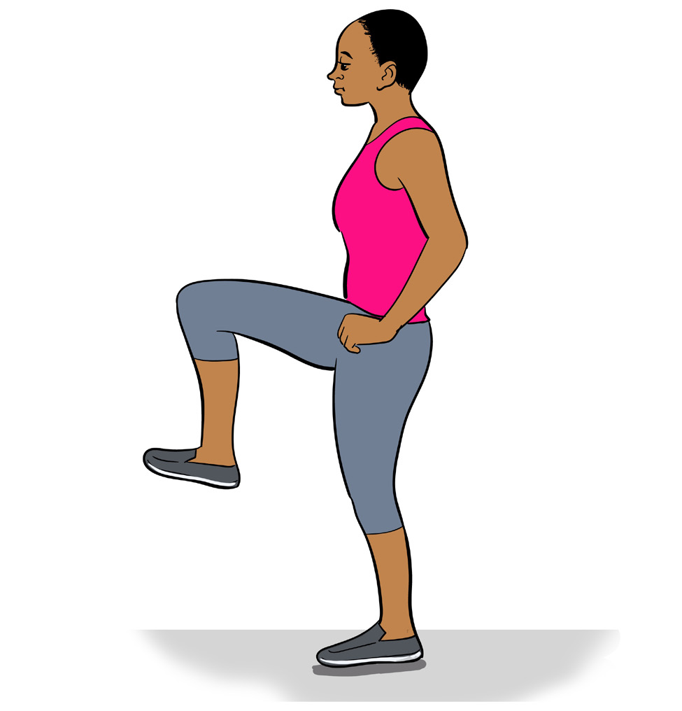

Performance related physical fitness
The performance related physical fitness comprises five key components of which should be addressed to promote good performance in sports, namely agility, balance, coordination, reaction time and power.
Balance
Balance can be defined as the ability of an individual to maintain the line of gravity within the support base. This includes static and dynamic balance. Static balance is the ability to maintain balance in stationary position, while dynamic balance is the ability to maintain balance while moving. Body balance is commonly measured by single leg stance test.
Exercises for improving balance
Exercises like balance beam walk, single leg balance, balance walk, single leg squat, single leg dead lift and leg swing can be used to improve the body balance.
The following is how to perform single leg stance:
- (i) Hold hands on the hip with eyes open;
- (ii) Stand by one leg un-assisted for at least 10 seconds; and
- (iii) Do the same with another leg.
